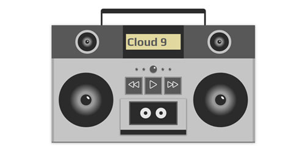
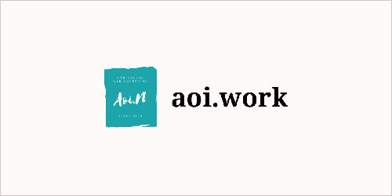
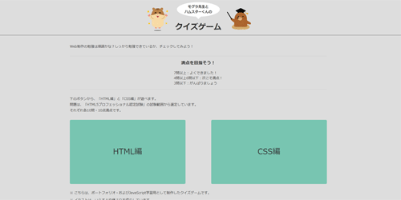
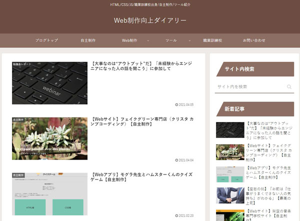
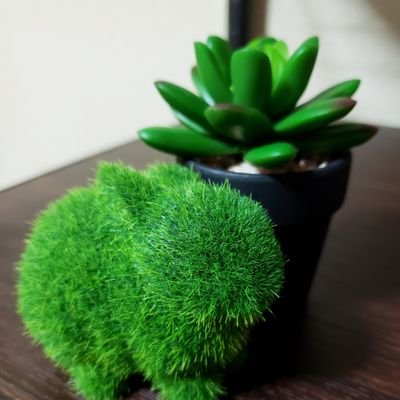

aoi.work
作品集

ラジカセ
HTML/CSS/JavaScriptを用いてラジカセを作りました。JavaScriptで再生・一時停止・曲送り（戻し）を制御しています。

ポートフォリオサイト
ただいまご覧のサイトです。スムーズな情報閲覧が可能なデザインを目指しました。BEM+scssで設計およびコーディングを行なっています。

クイズゲーム
JavaScriptを用いて、4択のクイズゲームを作りました。正解・不正解や、結果画面での正解数に応じてキャラクターの表情が変わります。
アウトプット
Blog
プロフィール

西 葵
職業：Webコーダー
取扱可能言語・技術：HTML5、CSS、JavaScript
※PHPおよびWordPressは学習中です
会社員として働きながら、フリーランスのWebコーダーとしても1社と提携し、活動しています。
経歴、スキルセットやその他の趣味などは、プロフィールページをご覧ください。
お問い合わせ
お問い合わせ、お仕事のご依頼・ご相談は下記より受け付けております。
お気軽にご連絡ください。
※大変恐れ入りますが、「メールフォーム」につきましては私のブログに併設しているお問い合わせフォームへジャンプいたします。なお、プライバシーポリシーにつきましてはブログ掲載分に準拠いたします（リンク先のフォームにてご確認いただけます）。